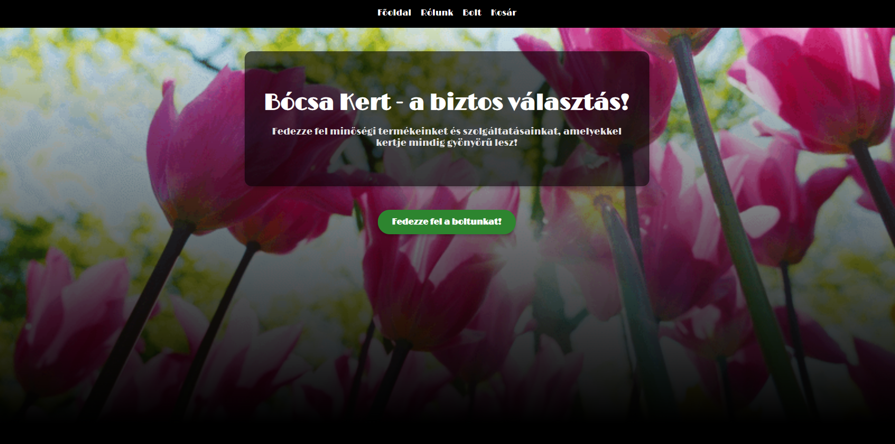
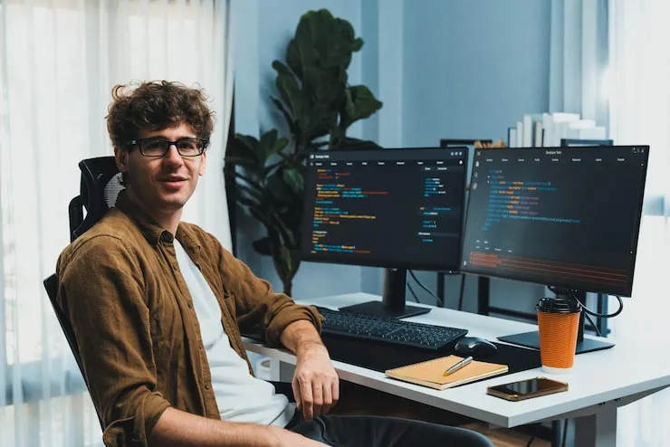
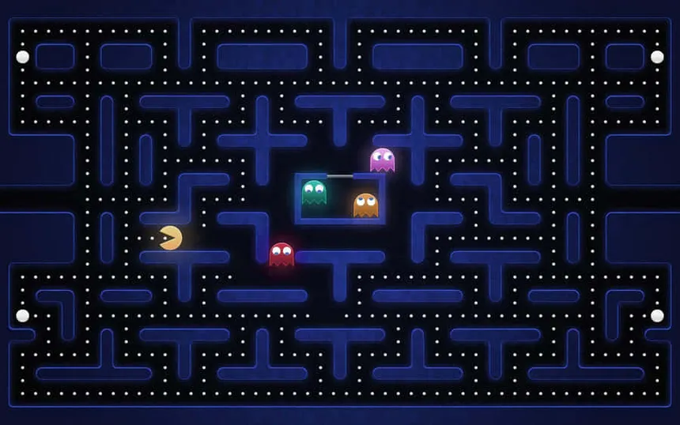
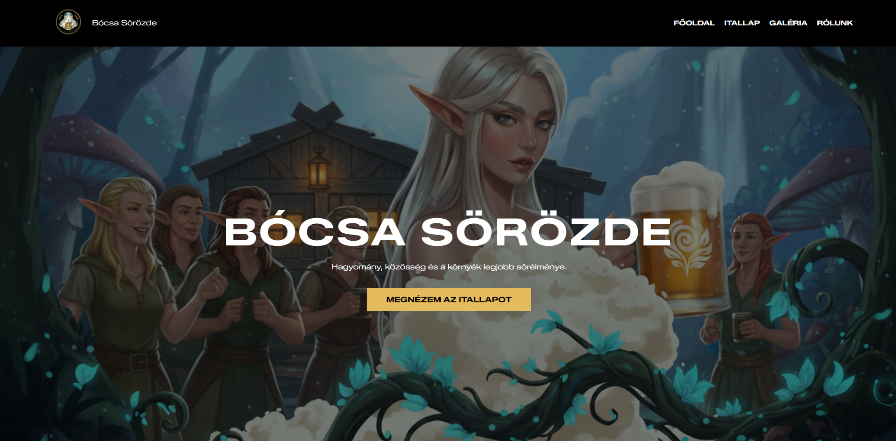

Bócsa Kert
Kertészeti webáruház bemutatkozó oldala, teli képernyős hero szekcióval, egyedi CTA gombbal és reszponzív elrendezéssel.
Üdvözöllek! Botkovics Lóránt vagyok, junior webfejlesztő. Hiszek abban, hogy a jó weboldal nemcsak esztétikus, hanem gyors, felhasználóbarát és minden eszközön tökéletesen működik. Célom, hogy modern technológiákkal olyan digitális élményeket hozzak létre, amelyek valódi értéket képviselnek a felhasználók és a megrendelők számára. Főbb technológiáim és készségeim: HTML5, CSS3, JavaScript, React, Tailwind CSS, Git és GitHub. Junior fejlesztőként szeretnék egy olyan összetartó, tapasztalt szakemberekből álló csapathoz csatlakozni, ahol tovább mélyíthetem a tudásomat, komplexebb projektekben vehetek részt, és hosszútávon stabil értéket teremthetek a cég számára.


Kertészeti webáruház bemutatkozó oldala, teli képernyős hero szekcióval, egyedi CTA gombbal és reszponzív elrendezéssel.

HTML5 Canvas és JavaScript alapú böngészős játék, saját labirintus-logikával, ütközésvizsgálattal és mozgó szellem-ellenfelekkel.

Egy sörözde weboldala fantasy hangulatú hero képpel, saját logóval és itallapra mutató navigációval.